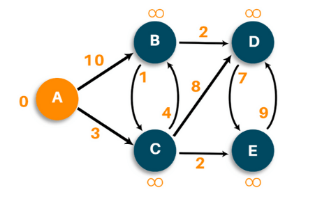
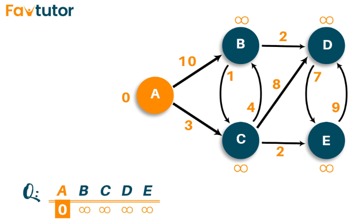
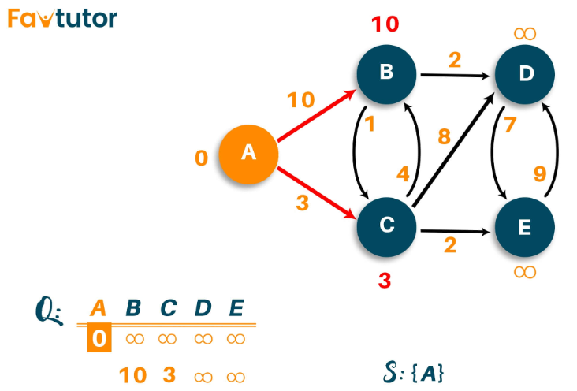
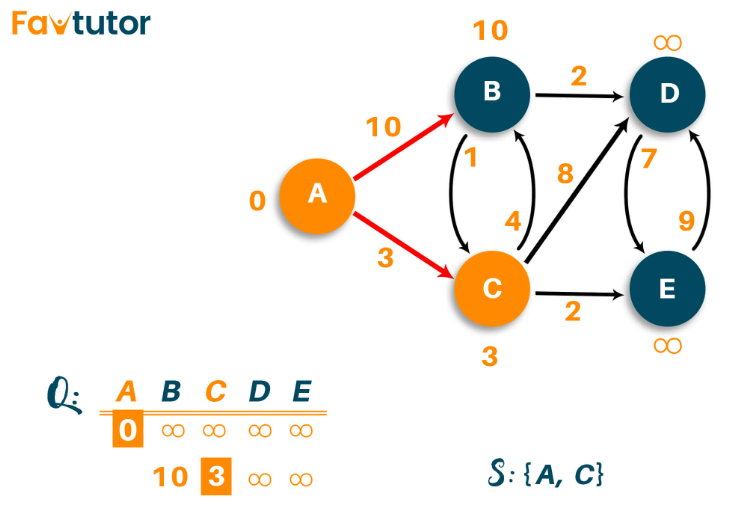
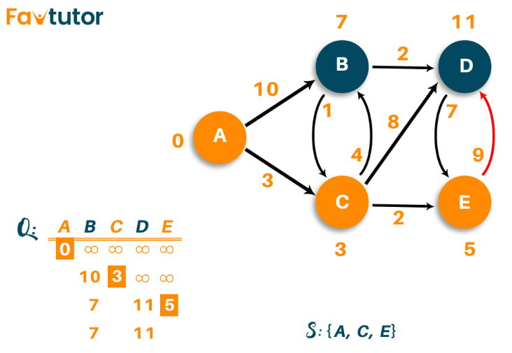
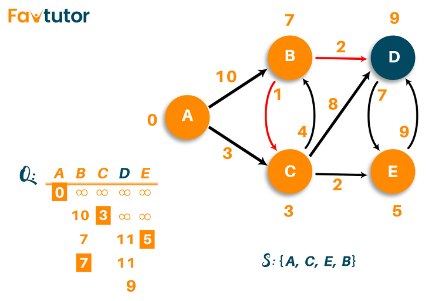

Author:
Dijkstra⚓︎
Keywords: 2D Graphics, shortest path
Situation⚓︎
Situation
Dijkstra is an algorithm used to find the shortest path between nodes of the graph. The algorithm creates the tree of the shortest paths from the starting source vertex from all other points in the graph.
Working conditions
Dijkstra's algorithm only works with the graph that possesses positive weights.
Is Dijkstra BFS or DFS?
None of them. Dijkstra is a priority first algorithm (or best first).
Between BFS and DFS algorithms, the priority will be more to BFS rather than DFS. However, Dijkstra is much more than the BFS algorithm.
Question⚓︎
Question
Consider the following situation:

- Input: Graphic matrix[5][5], (A,B,C,D,E)
- Output: Dist[0,7,3,9,5], Trac matrix[path_for_A, path_for_B, path_for_C...]
- Explanation: Take "B" as an example: A --3→ C --4→ B => Dist[1] = 3+4 = 7
Explanation⚓︎
Explanation
- First of all, we will mark all vertex as unvisited vertex
- Then, we will mark the source vertex as 0 and all other vertices as infinity
- Consider the source vertex as current vertex
- Calculate the path length of all the neighboring vertex from the current vertex by adding the weight of the edge in the current vertex
- Now, if the new path length is smaller than the previous path length, then replace it otherwise ignore it
- Mark the current vertex as visited after visiting the neighbor vertex of the current vertex
- Select the vertex with the smallest path length as the new current vertex and go back to step 4.
- Repeat this process until all the vertex are marked as visited.
- 
- 
- 


- 

- 

Pseudo-code⚓︎
Pseudo-code
Pseudo-code
//--------------------------------------------
// Author = "Tianle Yuan, Shivali Bhadaniya"
//--------------------------------------------
//G is the graph, S is the Sources Vertex
function dijkstra(G, S){
dist[] //record distance from each Vertex to the Source Vertex
prev[]
for each vertex V in G
dist[V] <- infinite
prev[V] <- NULL
If V != S, add V to Priority Queue Q
dist[S] <- 0
while Q != ∅
//U is another Vertex
U <- Extract MIN from Q //Pop the top of heap Q
for each unvisited neighbour V of U
temperoryDist <- dist[U] + edgeWeight(U, V)
if temperoryDist < dist[V]
dist[V] <- temperoryDist
prev[V] <- U
return dist[], prev[]
}
Answer⚓︎
Realization
solution.c++
//--------------------------------------------
// Author = "Tianle Yuan, Shivali Bhadaniya"
//--------------------------------------------
#include<iostream>
using namespace std;
// global variables
int dimension;
vector<bool> grabage_set; // boolean array to mark visited and unvisited for each node
vector<int> distance_set; // // array to calculate the minimum distance for each node
vector<vector<int>> prev_set;
//Algorithm body
void Dijkstra(vector<vector<int>> graph, int src) // adjacency matrix
{
distance_set[src] = 0; // Source vertex distance is set 0
priority_queue<pair<int,int>, vector<pair<int,int>>, greater<pair<int,int>>> heap;
heap.push({src, 0});
while (heap.size() != 0){
auto current = heap.top().second;
heap.pop();
grabage_set[current] = true;
for(int k = 0; k < dimension; k++)
{
// updating the distance of neighbouring vertex
int tempdist = distance_set[current] + graph[current][k];
if(!grabage_set[k] && graph[current][k])
{
if (tempdist < distance_set[k])
{
distance_set[k] = tempdist;
prev_set[k].push_back(current);
}
heap.push({tempdist,k});
//cout << tempdist << "," << k << endl;
}
}
}
}
void printout();
int main()
{
vector<vector<int>> graph={
{0, 10, 3, 0, 0},
{0, 0, 1, 2, 0},
{0, 4, 0, 8, 2},
{0, 0, 0, 0, 7},
{0, 0, 0, 9, 0}};
dimension = graph[0].size();
grabage_set.resize(dimension,false);
distance_set.resize(dimension,INT_MAX);
prev_set.resize(dimension,vector<int>());
Dijkstra(graph,0);
printout();
return 0;
}
void printout(){
for(auto i: distance_set)
{
cout << i << endl;
}
cout << endl;
for(int k = 1; k < prev_set.size(); k++)
{
cout << char('A'+ k) << " to A: ";
for (int t = 0; t < prev_set[k].size(); t++)
{
if (t < prev_set[k].size() - 1)
cout << char('A'+ prev_set[k][t]) << " <- ";
else
cout << char('A'+ prev_set[k][t]) << " <- " << char('A'+ k) << endl;
}
}
}
References:⚓︎
Last update:
December 3, 2022 08:43:42
Created: December 3, 2022 08:43:42
Created: December 3, 2022 08:43:42